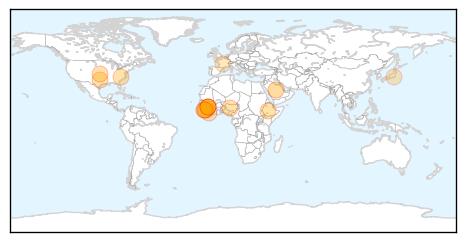

30 Day Trends
Web: 1 alerts, 0 warnings
Twitter: 0 alerts, 0 warnings
22 new deaths (11283 total)
253 new cases (27895 total)
Top Articles:
- 1.000
- D.C. patient tests negative for Ebola
- 0.998
- Fourth Sierra Leonean doctor dies from Ebola
- 0.998
- African Union meets for Ebola crisis talks
- 0.998
- Experimental Ebola vaccine could stop deadly virus in West Africa
- 0.997
- Did Merck and NewLink Genetics Just Cure Ebola?
- 0.993
- Sierra Leone ends Ebola quarantine for 500 villagers
- 0.990
- CDC Gave ‘OK To Fly’ to Ebola Nurse With Fever
- 0.989
- S/Leone's Koroma warns against politicising Ebola
- 0.988
- Sierra Leone lifts its last large-scale quarantine
- 0.987
- Ebola epidemic could be defeated by end of 2015
- 0.984
- "We must stay the course" President urges the people of Kambia and Port Loko
- 0.955
- Dr. Craig Spencer getting experimental anti-viral drug Brincidofovir to fight Ebola: officials
- 0.940
- “We are on track to eradicate Ebola” , says President Ernest Koroma
- 0.762
- After Ebola success: Fujifilm aims to boost medical business- Nikkei Asian Review
- 0.715
- Public in Favor of Global Health Initiatives
- 0.632
- Saudi Arabia can use space technology to prevent Ebola
- 0.622
- Saudi scientist invents technology that breaks animal fat, petrochemical products
- 0.512
- Sierra Leone initiates move to lift ban on pilgrims
Top Tweets:
- 0.798
- As Ebola crisis ebbs for Sierra Leone food insecurity gnaws at recovery - Christian Science Monitor http://t.co/UOjt5UiulR ebola EVD
- 0.781
- Sierra Leone ends Ebola quarantine for 500 villagers - Times of India http://t.co/zSfqnv84It ebola EVD
Web/News Articles

Tweets

Human Impact
Article Locations
Article Confidences